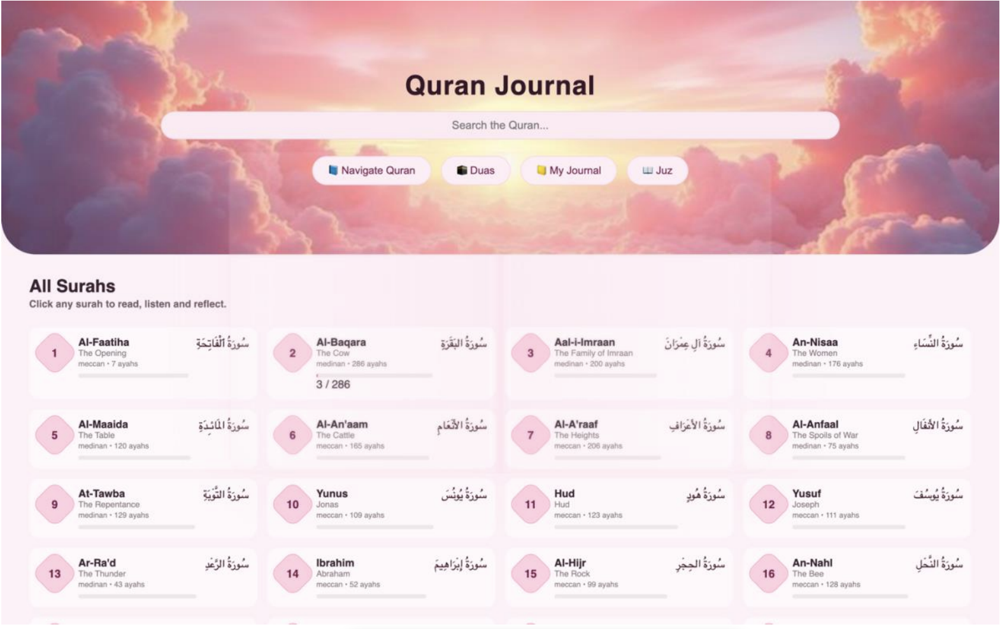

Web Design Services
As a web design company, we offer the best customised web design services and digital solutions for your marketing development. Simplicity is key. Overly complex web designs can be difficult to navigate and end up overwhelming visitors.
Web design is constantly evolving, and keeping up with digital marketing trends is essential for creating an effective and visually appealing website. Bold typography and clean layouts help grab attention and emphasize key points.
Every layout we build is optimized for cross-browser compatibility and rapid response times, ensuring a seamless user experience across desktops, tablets, and handheld devices.